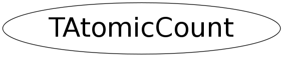

class TAtomicCount
TAtomicCount Class providing atomic operations on a long. Setting, getting, incrementing and decrementing are atomic, thread safe, operations. TAtomicCount a(n); (n is convertible to long) Effects: Constructs an TAtomicCount with an initial value of n. long(a); Returns: (long) the current value of a. ++a; Effects: Atomically increments the value of a. Returns: nothing. --a; Effects: Atomically decrements the value of a. Returns: (long) zero if the new value of a is zero, unspecified non-zero value otherwise (usually the new value). a.Set(n); Effects: Set a to the value n. Returns: nothing. a.Get(); Returns: (long) the current value of a.
Function Members (Methods)
public:
| TAtomicCount(Long_t v) | |
| ~TAtomicCount() | |
| Long_t | Get() const |
| long | operator long() const |
| void | operator++() |
| Long_t | operator--() |
| void | Set(Long_t v) |
private:
| TAtomicCount(const TAtomicCount&) | |
| TAtomicCount& | operator=(const TAtomicCount&) |
Data Members
private:
| Long_t | fCnt | counter |
Class Charts
{kind=link}
{kind=link}
{kind=link}
{kind=link}

Function documentation
TAtomicCount(const TAtomicCount& )
TAtomicCount & operator=(const TAtomicCount& )